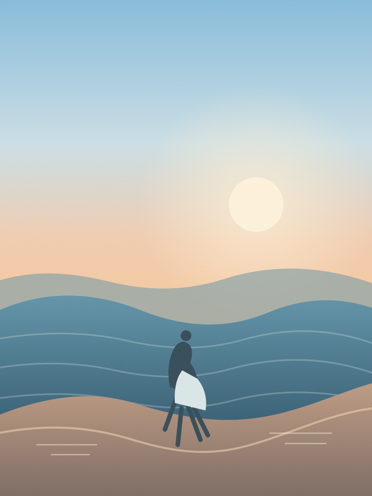

Try a sample scene. Switch the look, find a frame, and see how a little guidance changes the way you compose.
PREVIEW STUDIOSAMPLE SCENE · NO CAMERA ACCESS

REAR CAMERA4:3 ⌄
⌖Try moving a little left
1.0×
2026.10.28
A NEW COPY, READY TO SAVE
A quiet nudge. You still choose when to shoot.
Sample controls only. FramedLocal never accesses your camera from this page.
Built around the photograph
Everything in service of the frame.
From the first glance through the final print, FramedLocal keeps the tools simple and the choices yours.
Try moving left
01 / COMPOSE
A guide, never a rule.
Local subject detection, a smooth zoom dial, and explainable framing hints help you notice what could move. The shutter stays yours.
What can it notice?
Subject position, headroom, edge spacing, horizon tilt, highlight clipping, and low-light shadows. Tap a subject to keep guidance with it; optional haptics stay subtle. Focus, exposure, and white balance stay automatic unless you adjust them. Suggestions are advisory—never “the best frame.”
FIVE ORIGINAL LOOKS
02 / MAKE IT YOURS
A little color, a little character.
Five original local presets, optional auto-improvement, three frame styles, and flexible crops. Preview the result before you save.
What’s in the set?
Natural, Warm Print, Soft Mono, Faded Color, and Night Grain. Choose Original, Square, 4:3, or 16:9, reposition the crop, and add a date if it feels right. Auto-improvement applies to the new rendered copy after capture.
↗
ORIGINALNEW PRINT
03 / KEEP THE ORIGINAL
Make a new copy. Keep the first.
Bring in a photo with the system picker, crop and edit locally, then export a separate JPEG. Your source image is left untouched.
How does it save?
FramedLocal uses add-only Photos access. It tries the dedicated Framed album when available and reports clearly when a save goes to Recents.
A softer workflow
Notice. Shape. Keep.
01
Find the frame
Use the front or rear camera, adjust zoom with a smooth dial, and turn on quiet composition hints—or ignore them and shoot.
02
Make it yours
Try a local look, reposition a crop, choose a border, and add a date if it feels right.
03
Save a fresh copy
Export a new JPEG to Photos. Your original capture or selected photo stays as it was.
LOCAL
Private by design
Your photos stay on your iPhone.
Camera analysis, looks, and edits are designed to run on-device. No cloud AI, photo uploads, analytics, or network dependency in the app.
✓ Add-only Photos saving✓ System photo picker✓ Originals stay untouched
FramedLocal · iPhone camera
Take a little more time with it.
This project is in local development. The preview above is an illustration—not a live camera or downloadable app.